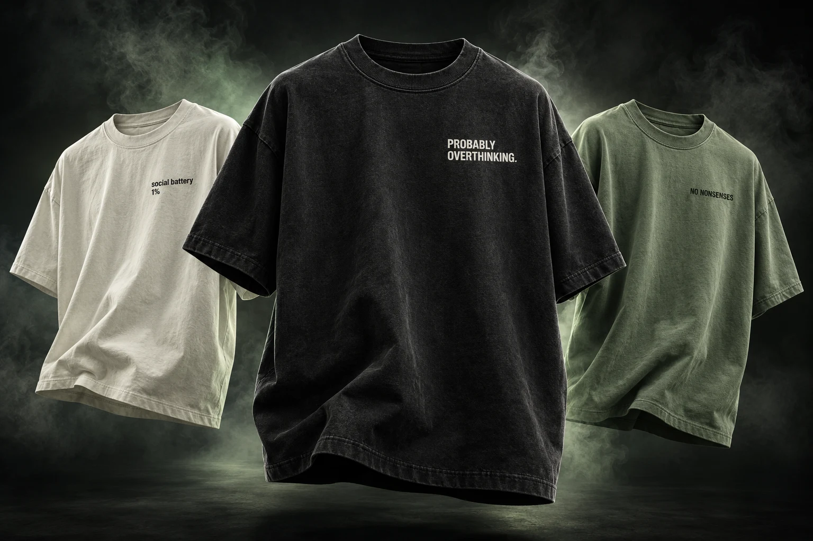

Probably Overthinking.
Graphic tee / Washed black
For the things you think. And probably shouldn't say.
Everyday clothing with an unapologetic sense of humour.

A first look at our kind of everyday essentials.
Pick a mood. Find your people.
Graphic tee / Washed black
Graphic tee / Off-white
Everyday tee / Sage
Original design concepts. Final fits, fabrics, and pricing will be shared at launch.
Some days you're the main character. Some days you're just trying to answer one email. We make room for both.
No Nonsenses is a clothing idea for people with a sense of humour and very little interest in pretending. Familiar thoughts. Unexpected punchlines. Something that feels like you.
Find your inside voice ↗The idea behind every piece.
Nothing complicated about it.
Relatable thoughts turned into wearable punchlines.
Grounded shades that let the words do the talking.
A little self-awareness looks good on everyone.
Not yet. This is a preview of our first collection and the direction of the brand. Ordering will open once final products, prices, and delivery details are ready.
These are original concept mockups. Graphics, colours, fabrics, and fits may change as the collection develops. Final product photography and specifications will be published before sales open.
Open any collection card to explore the design and see the fit guide. The final garment measurements and size chart will be available at launch, so you can compare them with a tee you already love.
Shipping regions, delivery times, and the returns policy are being finalized. These details will be available before checkout opens. There are no orders or payments being taken on this preview.